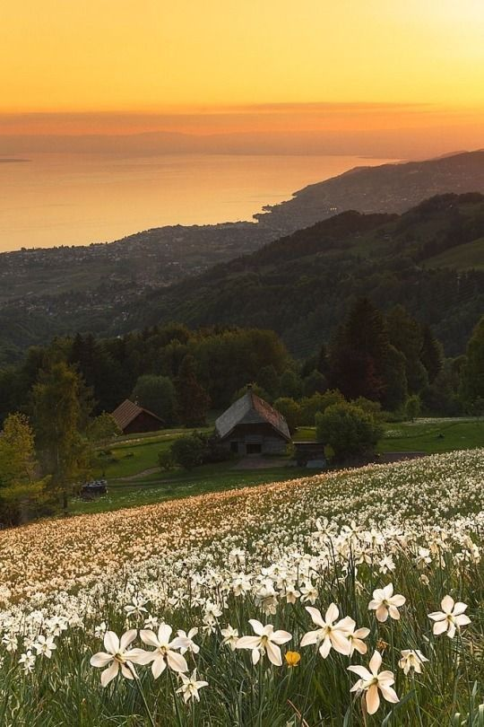
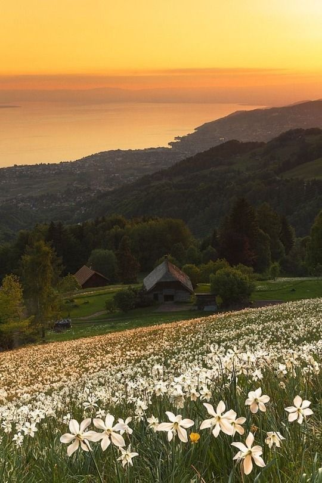

Welcome to Vinland Founded by Thorfin Son of Thors Vinland is a place of peace where anyone seeking senctuary they can find it within this land and there on they can find eternal peace
The son of Thors, a legendary Viking warrior. Initially driven by revenge against Askeladd, who killed his father

Thorfinn matures throughout the story, transitioning from a wrathful fighter to a man seeking peace and redemption. His journey explores themes of vengeance, forgiveness, and the pursuit of a meaningful life
 
